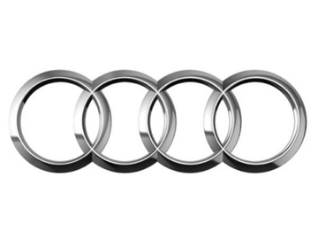

 На сегодняшний день Audi, дочерняя компания Volkswagen AG, является одним из лидирующих европейских производителей с насыщенной вековой историей. Немецкий автомобилестроительный концерн динамично развивается по большинству существующих направлений, таких как бизнес-сегмент (Audi A6), представительский класс (Audi A8), спортивные купе и гоночные авто (Audi TT, Audi R8), кроссоверы (Audi Q7, Q8, Q5, Q3). Объём ежегодного производства корпорации составляет более миллиона автомобилей. В дальнейшем «Ауди» планирует выпускать современные технологичные модели для настоящих ценителей. Компания «Ауди» была основана в 1909 году немецким талантливым инженером и конструктором по имени Август Хорьх. Его фамилия в переводе с немецкого означает «слушать». Латинская версия этого слова – Audi - и стала названием бренда. Четыре кольца эмблемы символизирует слияние четырёх производителей легковых машин и мотоциклов (DKW, Horch, Wanderer, Audi), которое случилось в 1934 году. Фирмы не являлись конкурентами, т. к. каждой из них был выделен отдельный рыночный сегмент. В 30-х годах Германия взяла курс на милитаризацию, и «Ауди» не была исключением. Полностью остановив выпуск гражданских машин в начале Второй мировой войны, компания стала одним из главных поставщиков военных автомобилей. Многие заводы «Ауди» были разрушены в результате военных действий, что привело предприятие к потере независимости спустя 13 лет после окончания войны: пребывая на грани банкротства, компания была приобретена одним из крупнейших концернов Daimler-Benz AG. А в 1964 году контрольный пакет акций был продан корпорации Volkswagen Group. В начале 50-х годов началась новая страничка в истории «Ауди»: пребывающая на грани банкротства компания была приобретена одним из крупнейших концернов Daimler-Benz AG. Спустя 15 лет контрольный пакет акций был продан корпорации Volkswagen Group, и Audi потеряла свою независимость. В 1974 году главой конструкторского отдела стал ФердинандПьёх. Именно под его началом концерн стал стремительно наращивать технические разработки. Появился пятицилиндровый двигатель, полный привод Quattro. В производстве моторов стала использоваться технология турбонагнетания. С 1985 года были введены такие новшества, как полностью оцинкованный кузов, совершенный аэродинамический дизайн, экономичные дизельные двигатели с технологией непосредственного впрыска, гибридный привод, сверхмощные восьми- и двенадцатицилиндровые моторы. В 1993 году произошло поглощение итальянской компании Automobili Lamborghini, испанской Seat и британской Cosworth Technology. В настоящее время Audi находится на очередном подъёме, постепенно заполняя пока ещё неохваченные ниши автомобилестроения.
На сегодняшний день Audi, дочерняя компания Volkswagen AG, является одним из лидирующих европейских производителей с насыщенной вековой историей. Немецкий автомобилестроительный концерн динамично развивается по большинству существующих направлений, таких как бизнес-сегмент (Audi A6), представительский класс (Audi A8), спортивные купе и гоночные авто (Audi TT, Audi R8), кроссоверы (Audi Q7, Q8, Q5, Q3). Объём ежегодного производства корпорации составляет более миллиона автомобилей. В дальнейшем «Ауди» планирует выпускать современные технологичные модели для настоящих ценителей. Компания «Ауди» была основана в 1909 году немецким талантливым инженером и конструктором по имени Август Хорьх. Его фамилия в переводе с немецкого означает «слушать». Латинская версия этого слова – Audi - и стала названием бренда. Четыре кольца эмблемы символизирует слияние четырёх производителей легковых машин и мотоциклов (DKW, Horch, Wanderer, Audi), которое случилось в 1934 году. Фирмы не являлись конкурентами, т. к. каждой из них был выделен отдельный рыночный сегмент. В 30-х годах Германия взяла курс на милитаризацию, и «Ауди» не была исключением. Полностью остановив выпуск гражданских машин в начале Второй мировой войны, компания стала одним из главных поставщиков военных автомобилей. Многие заводы «Ауди» были разрушены в результате военных действий, что привело предприятие к потере независимости спустя 13 лет после окончания войны: пребывая на грани банкротства, компания была приобретена одним из крупнейших концернов Daimler-Benz AG. А в 1964 году контрольный пакет акций был продан корпорации Volkswagen Group. В начале 50-х годов началась новая страничка в истории «Ауди»: пребывающая на грани банкротства компания была приобретена одним из крупнейших концернов Daimler-Benz AG. Спустя 15 лет контрольный пакет акций был продан корпорации Volkswagen Group, и Audi потеряла свою независимость. В 1974 году главой конструкторского отдела стал Фердинанд Пьёх. Именно под его началом концерн стал стремительно наращивать технические разработки. Появился пятицилиндровый двигатель, полный привод Quattro. В производстве моторов стала использоваться технология турбонагнетания. С 1985 года были введены такие новшества, как полностью оцинкованный кузов, совершенный аэродинамический дизайн, экономичные дизельные двигатели с технологией непосредственного впрыска, гибридный привод, сверхмощные восьми- и двенадцатицилиндровые моторы. В 1993 году произошло поглощение итальянской компании Automobili Lamborghini, испанской Seat и британской Cosworth Technology. В настоящее время Audi находится на очередном подъёме, постепенно заполняя пока ещё неохваченные ниши автомобилестроения.